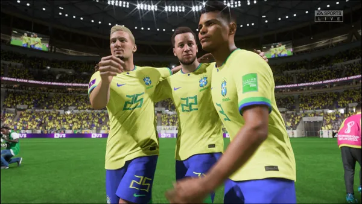
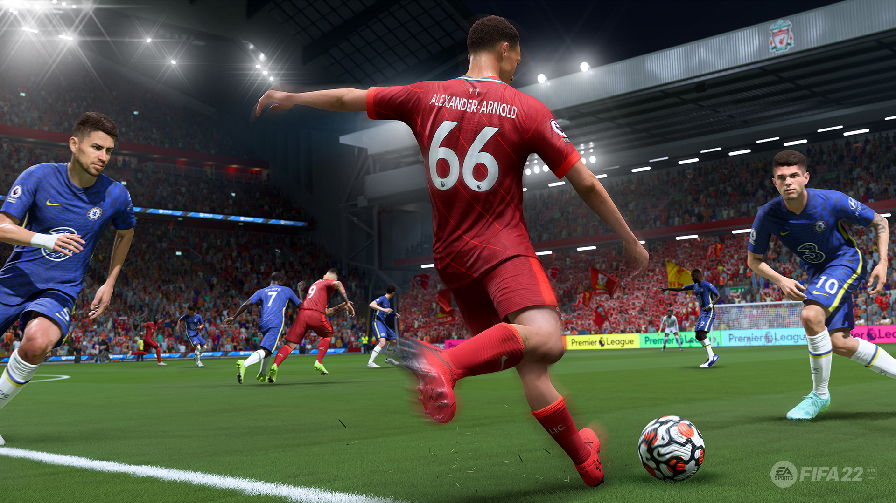
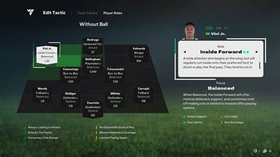

FIFA 2025 traz a experiência de futebol mais realista de todos os tempos, com gráficos de nova geração, jogabilidade aprimorada e novos modos incríveis.
5 motivos para jogar FIFA 2025:
- Gráficos ultra realistas com engine atualizada
- Modos de jogo inéditos e imersivos
- Inteligência artificial revolucionária (FC IQ)
- Jogabilidade mais fluida e responsiva
- Suporte completo para multiplayer cross-plataforma


